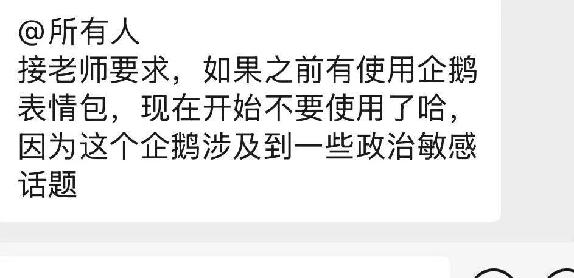

萌狗教主
@yoyokiiy
@whyyoutouzhele 闭关锁国进行中。

李老师不是你老师
@whyyoutouzhele
12月9日，某学校教师在班级群里提醒同学们，近期网络上流行的“高雅人士”企鹅表情包因被部分网友二次创作出涉及敏感历史与政治隐喻的内容，已经带来争议，要求学生不要继续使用相关表情。
这类表情包最初为搞笑梗图，但随后有人将其改绘为红卫兵造型、坦克画面，甚至与某些历史事件的象征性场景相结合。 https://t.co/Ak0GPE7JPP